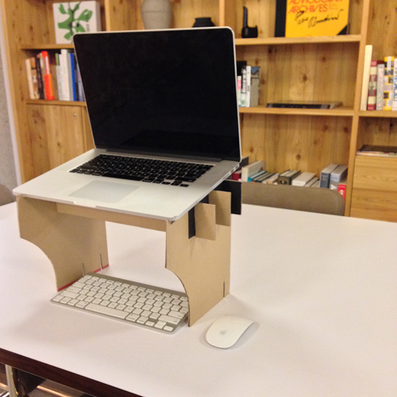
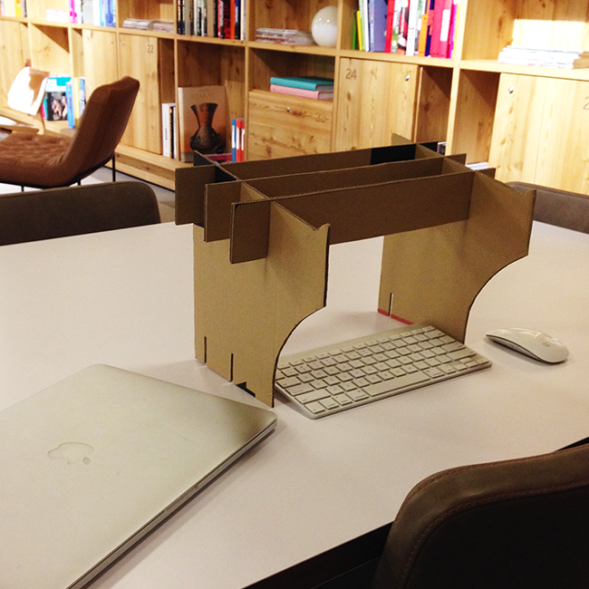
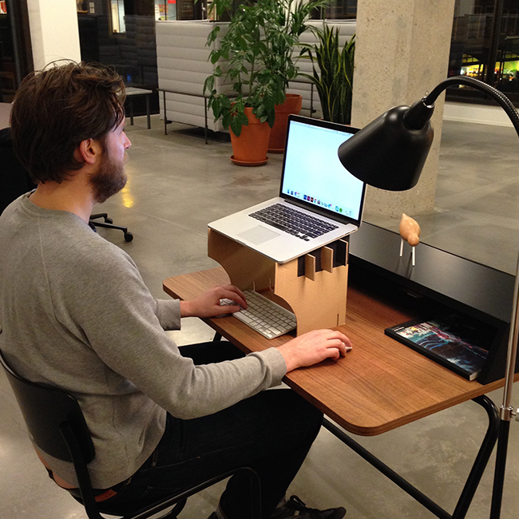

Work Happy!
The happy stand is a DIY cardboard laptop stand solution.
High: tall enough for a giant (longy)! Have the stand as tall or short as you like. Simply cut down the base panels to suit your height.
Light & portable: five pieces come apart and flat pack. Cardboard is super light and suprisingly durable.
Free & Recycled: It doesn't cost anything and you can make it from any old box. You have control over the aesthetic.



Make your own
Macbook air
Smaller template for use with your 11inch laptop.
Macbook pro
Larger template for use with a laptops 13inches or greater.
Watch the video
See the complete step by step process of how to build your own happy stand.
What you need
- Print out of the template
- Stanley knife or scalpel
- Cutting matt (excess cardboard will do)
- Cardboard with a minimum 30cm square panel
Got some feedback?
We would love to hear from you!
The Happy Stand has been through many iterations and I am always looking to improve it in any way possible. Let us know if you come up with an improved solution or if you have any questions at all.